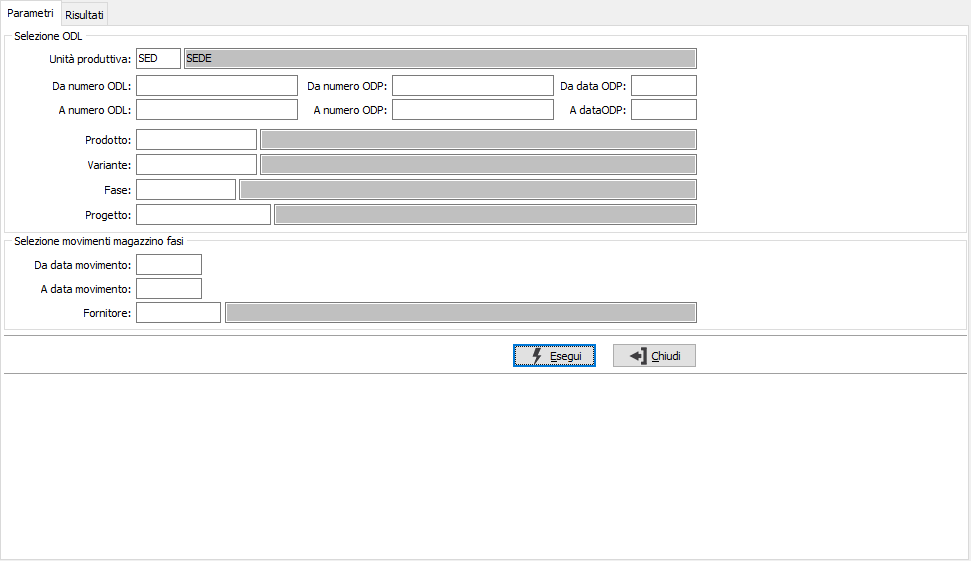
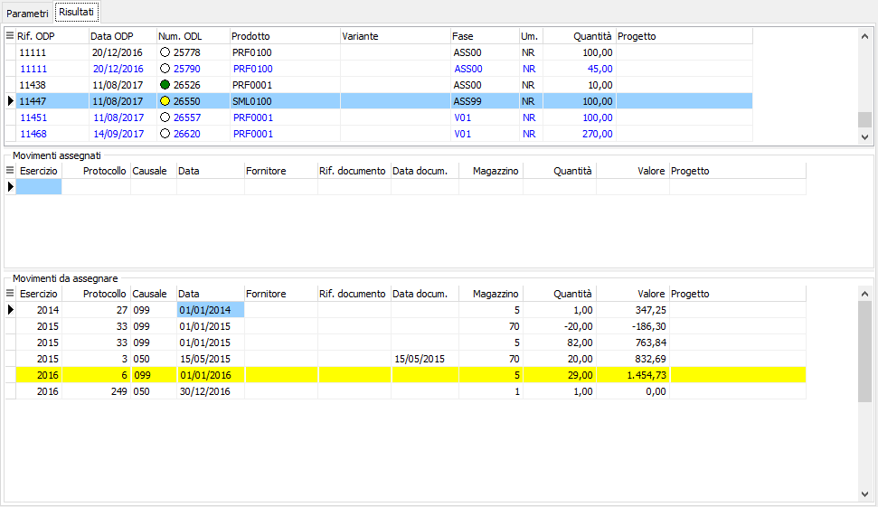

Assegnazione manuale costi ODL
La funzione consente di gestire situazioni in cui è necessario associare movimenti del magazzino di carico per produzione inseriti manualmente dalla prima nota ad un ODL per la corretta valorizzazione (per esempio per rilavorazioni). La pagina Parametri presenta due gruppi di parametri, uno per la selezione degli ODL ed un altro per la selezione dei movimenti di magazzino fasi; premendo il pulsante Esegui si avvia l'elaborazione che porterà alla pagina dei risultati.

La pagina dei Risultati una griglia principale in alto che riporta l’elenco degli ODL, assieme al numero dell'ODL è stato inserito un indicatore visivo per capire se l'ODL ha movimenti già assegnati (verde), nessun movimento (bianco) o movimenti assegnati da salvare (giallo); le due griglie sottostanti riportano i movimenti di magazzino assegnati ed i movimenti non assegnati. In entrambe le griglie è possibile con il doppio clic del mouse o tramite il menù del tasto destro, selezionare o deselezionare un movimento. Se la selezione viene effettuata sui movimenti associati ha lo scopo di deassociare il movimento dall'ODP, se viene effettuata sui movimenti da assegnare ha lo scopo di collegare il movimento all'ODL. Al salvataggio viene aggiornato il collegamento con i movimenti di magazzino e gli ODL.
